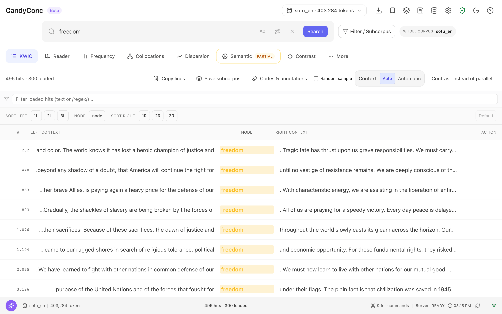
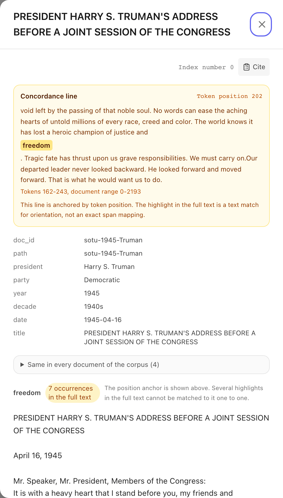
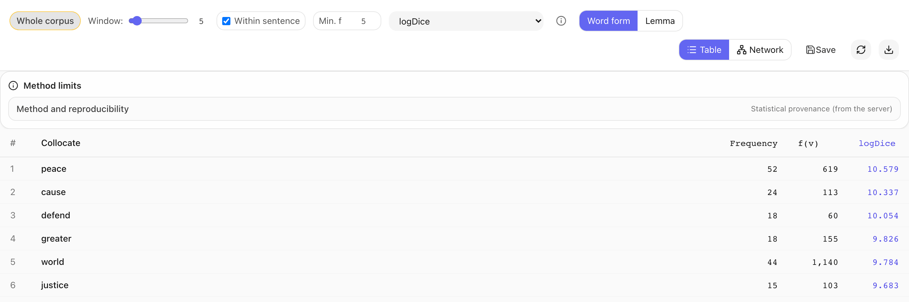
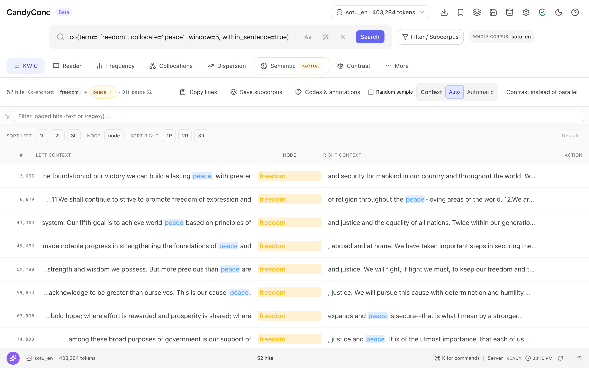
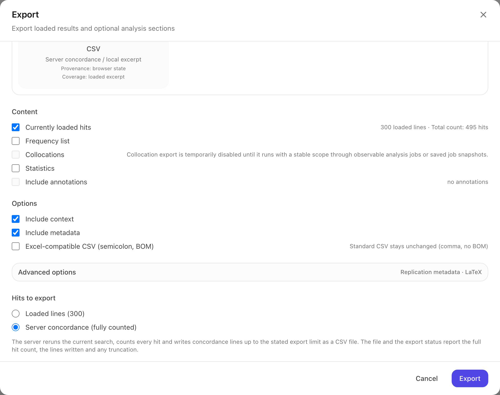

Tutorial: from download to first result#
In this tutorial you import the English sample corpus, search for the word freedom, read a hit in its document, find the words that typically occur near freedom, open the lines behind one of them, and save the concordance as a file. At the end you know what each number on the screen counts.
The sample corpus contains 65 addresses of US presidents to Congress from
1945 to 2006, mostly State of the Union addresses, in the version of the
C-SPAN State of the Union Address Corpus distributed by NLTK Data. As works
of the US federal government, the texts are in the public domain. Every
document carries the metadata fields president, party, year, decade,
date, and title.
Before you begin#
Install the application bundle as described in Install CandyConc, and open a terminal in the unpacked folder.
If CandyConc is running, stop it with Control+C in its terminal before continuing. Step 3 starts it with the imported corpus.
Step 1 downloads 33.5 MB from GitHub. All other steps work offline.
Step 1: Download the English annotation pipeline#
CandyConc annotates English text with the spaCy pipeline en_core_web_md.
Download it once:
./candyconc pipeline en_core_web_md
The last line of the output reads Installed en_core_web_md into followed
by a folder.
Step 2: Import the sample corpus#
The sample file sotu_en_1945_2006.jsonl is in the folder examples of the
bundle.
Build the index of the sample corpus:
./candyconc import --input examples/sotu_en_1945_2006.jsonl --output ~/.candyconc/corpora/sotu_en --language en --meta-columns president party year decade date title --source state_union
The options name the input file, the folder of the new index, the language of the texts, the metadata fields to keep, and a label for the origin of the texts. The first two lines of the output confirm the pipeline and that the import adds dependency relations, which word sketches need:
Language en: spaCy pipeline en_core_web_md.
Dependency parsing is on: en_core_web_md has a parser (--no-deps turns it off).
CandyConc then prints the progress of the import. When the prompt returns,
the last line names the folder of the new index, which ends in
corpora/sotu_en.
Step 3: Start CandyConc#
./candyconc
The browser opens CandyConc. The corpus selector in the top bar shows sotu_en · 403,284 tokens, and the status bar at the bottom of the window shows Server READY. If the interface is in German, switch it to English as described in Choose the interface language.
Step 4: Search for a word#
Click the search field, which shows Enter a word, phrase or query....
Type
freedom.Press Enter.
Above the table, CandyConc shows 495 hits · 300 loaded. The table is the concordance: one line for every hit, with the hit in the column NODE and its context to the left and right. The number at the start of each line is the position of the hit in the corpus. When you scroll down, CandyConc loads the next lines.


The concordance for freedom. Each line shows one hit in the column NODE, with its corpus position at the start of the line.#
Step 5: Sort the concordance#
Next to SORT RIGHT, click 1R.
The lines are now sorted by the first token to the right of freedom, and the label Sorted: 1R ascending appears. Lines with the same following word stand together, so you can scan what follows freedom. Click Default to return to the order of the corpus.
Step 6: Read a hit in its document#
In the first line, click the highlighted word freedom.
A panel opens on the right with the address in which this hit occurs:
the title, PRESIDENT HARRY S. TRUMAN'S ADDRESS BEFORE A JOINT SESSION OF THE CONGRESS,
the box Concordance line with the label Token position 202 and a longer context of the hit,
the metadata of the document, among them
year1945 anddate1945-04-16,the full text of the address, in which every occurrence of freedom is highlighted. The label next to the text reads 7 occurrences in the full text.
Press Escape to close the panel.


The document panel of the first hit. Token position 202 identifies this line, and the highlights in the full text mark every occurrence of freedom.#
Step 7: Find the collocates of freedom#
Click the tab Collocations.
CandyConc computes the collocates of the current search. The table lists the words that occur near freedom, ranked by the association measure logDice. The settings above the table are the defaults: a window of 5 tokens to the left and right, windows that stop at sentence boundaries, and a minimum frequency of 5. The first three rows are:
Collocate |
Co-occurrence frequency |
Scope frequency f(v) |
logDice |
|---|---|---|---|
peace |
52 |
619 |
10.579 |
cause |
24 |
113 |
10.337 |
defend |
18 |
60 |
10.054 |


The collocation table with its settings row. Each row gives the co-occurrence frequency, the collocate frequency f(v) in the search scope, and the logDice score.#
Step 8: Go back from a collocate to its lines#
In the collocation table, click peace.
CandyConc switches to the tab KWIC and shows 52 hits. The label Co-anchors next to it names the two words, freedom and peace, and O11: peace 52 repeats the frequency from the collocation table. The search field now shows the same conditions as a reusable query:
co(term="freedom", collocate="peace", window=5, within_sentence=true)
Every line has freedom as the node and peace highlighted in its context. These are the passages that the number 52 in the collocation table counts.


The lines behind the row peace. The search field holds the co() query, and O11: peace 52 repeats the number from the collocation table.#
Step 9: Export the concordance#
In the search field, replace the query with
freedom.Press Enter. The concordance shows 495 hits again.
In the top bar, click Export (the download icon).
Choose Export as CSV.
In the dialog Export, check that CSV under Concordance file (server) is selected and that Hits to export is set to Server concordance (fully counted).
Click Export.
Your browser saves the file concordance.csv. Open it in a text editor. The
first lines start with # and record how the file was made. Among them are
these:
# Query: freedom
# Corpus: sotu_en
# TotalMatches: 495
# ExportedRows: 495
# Truncated: false
# IndexFingerprint: sha256:...
Below them, the file has one row for each of the 495 hits, with the columns
pos, doc_id, doc, left, node, right, and meta. The column
pos holds the token position that the concordance shows at the start of
each line, and meta holds the metadata of the document.


The lower part of the Export dialog. Hits to export chooses between the lines loaded in the browser and the full server concordance.#
What the numbers count#
495 hits are the tokens whose word form is freedom in any capitalization, in all 65 addresses with their 403,284 tokens. They occur in 62 of the 65 addresses. The concordance has one line for each hit, and the export wrote all 495.
Token position 202 is the position of the hit in the corpus, counted in tokens from the start of the first document, punctuation included. The same number appears at the start of the line and in the column
posof the export, so it identifies a line in every view.7 occurrences in the full text counts the places where freedom appears in the text of the Truman address.
52 in the row peace counts the tokens of peace that lie within five tokens to the left or right of a hit of freedom, in the same sentence. Opening the row gave 52 lines. The two numbers can differ when the windows of two nearby hits overlap. From numbers to lines explains when and why.
10.579 is the logDice of peace, derived from three raw counts: \(14 + \log_2 \frac{2 \cdot 52}{495 + 619}\), where 495 is the frequency of freedom and 619 the frequency of peace in the corpus. A derived measure has no lines of its own. See Collocations and association measures.
Next steps#
Follow one word through lemma search, dispersion, and collocations to citable evidence: Tutorial: from a search to evidence you can cite.
Compare Republican and Democratic addresses: Tutorial: compare two periods.
Import your own texts: Import a corpus.